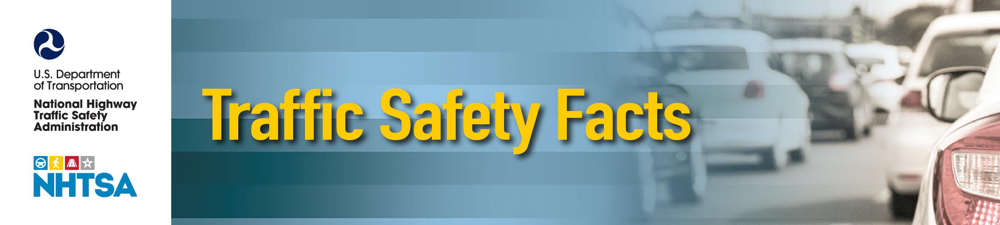
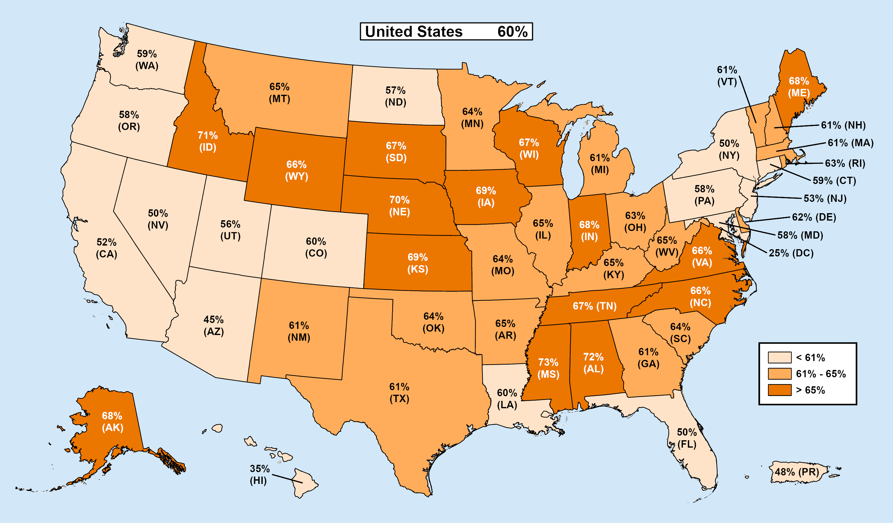

Passenger Vehicles: 2022 Data
1
2022 Data
DOT HS 813 592
July 2024
Passenger Vehicles
Passenger vehicles are defined as motor vehicles with gross vehicle weight
In this fact sheet for 2022
ratings of 10,000 pounds or less and include passenger cars and light trucks
the information is
(SUVs, pickups, vans, and other light trucks).
presented as follows.
• Registration Data
Key Findings
• Overview
• In 2022 there were 25,420 passenger vehicle occupants who died in
motor vehicle traffic crashes, a 4-percent decrease from 26,465 in 2021.
• Fatal Passenger Car and
An estimated 1,900,539 passenger vehicle occupants were injured, a 9-
Light-Truck, Two-
percent decrease from 2,092,743 in 2021.
Vehicle Traffic Crashes
• Passenger vehicles made up 92 percent of registered vehicles and
• Restraint Use
accounted for 88 percent of total vehicle miles traveled (VMT) in 2022.
There were 60,501 vehicles involved in fatal traffic crashes in 2022, of
• Ejection
which 76 percent (45,856) were passenger vehicles.
• Rollover
• In 2022 the traffic fatality rate per 100,000 registered vehicles continued
• Alcohol
to be the highest for passenger car occupants (12.13), followed by pickup
occupants (8.19), SUV occupants (6.91), and van occupants (6.85).
• Speeding
• Among the passenger vehicle occupants killed in 2022 in motor vehicle
• Three Behavioral
traffic crashes, 50 percent were passenger car occupants and 50 percent
Factors: Speeding
were light-truck occupants.
Involvement, Alcohol-
• When a passenger car and a light truck hit head-on in a fatal traffic crash
Impaired Driving, and
in 2022, an occupant was nearly three times more frequently killed in the
Seat Belt Non-Use
passenger car than in the light truck.
• State
• Eighty-three percent of passenger vehicle occupants who were totally
ejected from vehicles involved in fatal traffic crashes in 2022 were
killed.
• Among passenger vehicle occupants killed in 2022 by vehicle type, the
percentages of fatalities in vehicles that rolled over in traffic crashes was
highest for pickups (39%), followed by SUVs (36%), vans (23%), and
passenger cars (21%).
• Drivers of passenger cars and pickups had the highest percentages of
alcohol impairment in fatal traffic crashes (25%) compared to other
passenger vehicle drivers (20% for SUVs and 13% for vans) in 2022.
• Drivers of passenger cars had the highest percentage of drivers who were
speeding in fatal traffic crashes (22%) compared to other passenger
vehicle drivers (16% for pickups, 15% for SUVs, and 10% for vans) in
2022.
U.S. Department of Transportation
NHTSA’s National Center for Statistics and Analysis
1200 New Jersey Avenue SE, Washington, DC 20590
Passenger Vehicles: 2022 Data
2
This fact sheet contains information on fatal motor vehicle traffic crashes based on data from the Fatality Analysis
Reporting System (FARS) and non-fatal motor vehicle traffic crashes from the Crash Report Sampling System
(CRSS). Results from FARS, such as fatal crashes and fatalities, are actual counts, while results from CRSS, such
as non-fatal crashes and people injured, are estimates. Refer to the end of this publication for more information on
FARS and CRSS.
Due to a vehicle classification change, the 2020 and later-year vehicle type classifications are not comparable to
2019 and earlier-year vehicle type classifications. This change affects any analysis with a vehicle component to it.
Refer to the end of this publication for more information on Product Information Catalog and Vehicle Listing
(vPIC).
This fact sheet has data only from 2020 to 2022 using vPIC. For earlier-year data, refer to the 2020
Passenger Vehicles TSF at crashstats.nhtsa.dot.gov/Api/Public/ViewPublication/813323. The data in this
previous publication used the earlier vehicle type classification based on NCSA body type.
A motor vehicle traffic crash is defined as an incident that involved one or more motor vehicles in-transport that
originated on or had a harmful event (injury or damage) on a public trafficway, such as a road or highway.
Crashes that occurred on private property not regularly used by the public for transport, including some parts of
parking lots and driveways, are excluded. The terms “motor vehicle traffic crash” and “traffic crash” are used
interchangeably in this document.
Registration Data
The passenger vehicle registration data contained in this fact sheet was obtained from R. L. Polk’s National
Vehicle Population Profile (NVPP), a compilation of all passenger vehicles registered in compliance with State
requirements.
Figure 1 highlights the passenger car and light-truck registration data from 2020 to 2022. From 2021 to 2022
passenger car registrations decreased by 3 percent, and light-truck registrations increased by 2 percent. Among the
light-truck categories in 2022 compared to 2021, SUV registrations increased by 4 percent, pickup registrations
increased by 1 percent, and van registrations decreased by 2 percent.
Figure 1. Passenger Car and Light-Truck Registrations, 2020–2022
Passenger Cars
Light Trucks
200,000,000
es
164,230,764
174,027,343
icl 150,000,000
170,108,546
eh
V
110,612,958
100,000,000
104,645,629
ed
107,934,093
er
ist 50,000,000
eg
R
0
2020
2021
2022
Source: Registered Vehicles – Polk data from S&P Global Mobility, Copyright © R.L. Polk & Co.
U.S. Department of Transportation
NHTSA’s National Center for Statistics and Analysis
1200 New Jersey Avenue SE, Washington, DC 20590
Passenger Vehicles: 2022 Data
3
Overview
In 2022:
• There were 25,420 passenger vehicle occupants who died in motor vehicle traffic crashes, a 4-percent
decrease from 26,465 in 2021, and an estimated 1,900,539 passenger vehicle occupants who were injured,
a 9-percent decrease from 2,092,743 in 2021.
• Passenger vehicles made up 92 percent of registered vehicles and accounted for 88 percent of total VMT.
• An estimated 10,528,849 vehicles were involved in police-reported traffic crashes; 81 percent (8,564,675)
were passenger vehicles.
• There were 60,501 vehicles involved in fatal traffic crashes, of which 76 percent (45,856) were passenger
vehicles.
Figure 2 displays the occupant fatality rates per 100,000 registered vehicles in traffic crashes for four types of
passenger vehicles (passenger cars, SUVs, pickups, and vans) from 2020 to 2022. Overall, the occupant fatality
rate trend for each vehicle type decreased from 2021 to 2022. The data for Figure 2 is presented in Tables 1 and 2.
In 2022 the fatality rate continued to be highest for passenger car occupants (12.13), followed by pickup
occupants (8.19), SUV occupants (6.91), and van occupants (6.85). Occupant fatality rates per 100,000 registered
vehicles from 2021 to 2022 decreased by 4 percent (12.62 to 12.13) for passenger cars and decreased by 3 percent
(7.55 to 7.31) for light trucks. Among light-truck categories, occupant fatality rates decreased by 2 percent (7.07
to 6.91) for SUVs, decreased by 5 percent (8.61 to 8.19) for pickups, and decreased by 1 percent (6.92 to 6.85) for
vans.
Figure 2. Passenger Vehicle Occupant Fatality Rates per 100,000 Registered Vehicles in Traffic
Crashes, by Vehicle Type, 2020–2022
Passenger Cars
SUVs
Pickups
Vans
15.00
es
12.62
per
e icleh
11.42
12.13
at V 10.00
8.61
ity R eder
7.94
al
7.07
8.19
at ist
6.42
6.91
t F eg 5.00
5.87
6.92
6.85
R
pan 000 ccuO100, 0.00
2020
2021
2022
Sources: FARS 2020-2021 Final File, 2022 Annual Report File (ARF); Registered Vehicles – Polk data from S&P Global Mobility,
Copyright © R.L. Polk & Co.
Table 1 presents the number of occupant fatalities, estimated number of occupants injured, number of registered
vehicles, and occupant fatality/injury rates per 100,000 registered vehicles in traffic crashes for total passenger
vehicles as well as separately for passenger cars and light trucks from 2020 to 2022.
• Passenger car occupant fatalities, as a proportion of passenger vehicle occupant traffic fatalities,
decreased from 51 percent in 2021 (13,618 of 26,465) to 50 percent in 2022 (12,691 of 25,420).
• Light-truck occupant fatalities, as a proportion of passenger vehicle occupant traffic fatalities, increased
from 49 percent in 2021 (12,847 of 26,465) to 50 percent in 2022 (12,729 of 25,420).
U.S. Department of Transportation
NHTSA’s National Center for Statistics and Analysis
1200 New Jersey Avenue SE, Washington, DC 20590
Passenger Vehicles: 2022 Data
4
• From 2021 to 2022 in traffic crashes:
o The total passenger vehicle occupant fatality rate decreased from 9.52 to 9.12.
o The passenger car occupant fatality rate decreased from 12.62 to 12.13.
o The light-truck occupant fatality rate decreased from 7.55 to 7.31.
o The passenger vehicle occupant injury rate decreased from 753 to 682.
o The passenger car occupant injury rate decreased from 1,027 to 927.
o The light-truck occupant injury rate decreased from 578 to 535.
Table 1. Passenger Vehicle Occupants Killed and Injured in Traffic Crashes, Registered
Vehicles, and Occupant Fatality/Injury Rates per 100,000 Registered Vehicles, by Vehicle Type,
2020–2022
Passenger Vehicle Type
Passenger Cars
Light Trucks*
Total*
Occupant
Occupant
Occupant
Occupant Registered Fatality Occupant Registered Fatality Occupant Registered Fatality
Year Fatalities
Vehicles
Rate
Fatalities
Vehicles
Rate
Fatalities
Vehicles
Rate
2020
12,628
110,612,958
11.42
11,286
164,230,764
6.87
23,914
274,843,722
8.70
2021
13,618
107,934,093
12.62
12,847
170,108,546
7.55
26,465
278,042,639
9.52
2022
12,691
104,645,629
12.13
12,729
174,027,343
7.31
25,420
278,672,972
9.12
Occupant
Occupant
Occupant
Occupants Registered
Injury
Occupants Registered
Injury
Occupants Registered
Injury
Year
Injured
Vehicles
Rate
Injured
Vehicles
Rate
Injured
Vehicles
Rate
2020 1,022,587 110,612,958
924
884,424 164,230,764
539
1,907,011 274,843,722
694
2021 1,108,839 107,934,093
1,027
983,904 170,108,546
578
2,092,743 278,042,639
753
2022 969,791 104,645,629
927
930,748 174,027,343
535
1,900,539 278,672,972
682
Sources: FARS 2020-2021 Final File, 2022 ARF; CRSS 2020-2022; Registered Vehicles – Polk data from S&P Global Mobility,
Copyright © R.L. Polk & Co.
*Includes other/unknown light-truck vehicle types.
Table 2 presents the same information as in Table 1 for three light-truck categories (SUVs, pickups, and vans)
from 2020 to 2022 in traffic crashes.
• From 2021 to 2022 in traffic crashes:
o The SUV occupant fatality rate decreased from 7.07 to 6.91.
o The pickup occupant fatality rate decreased from 8.61 to 8.19.
o The van occupant fatality rate decreased from 6.92 to 6.85.
o The SUV occupant injury rate decreased from 667 to 607.
o The pickup occupant injury rate decreased from 412 to 392.
o The van occupant injury rate decreased from 613 to 571.
U.S. Department of Transportation
NHTSA’s National Center for Statistics and Analysis
1200 New Jersey Avenue SE, Washington, DC 20590
Passenger Vehicles: 2022 Data
5
Table 2. Light-Truck Occupants Killed and Injured in Traffic Crashes, Registered Vehicles, and
Occupant Fatality/Injury Rates per 100,000 Registered Vehicles, by Vehicle Type, 2020–2022
Light-Truck Vehicle Type*
SUVs
Pickups
Vans
Occupant
Occupant
Occupant
Occupant Registered Fatality
Occupant Registered Fatality
Occupant Registered Fatality
Year Fatalities
Vehicles
Rate
Fatalities Vehicles
Rate
Fatalities Vehicles
Rate
2020
6,015
93,697,770
6.42
4,321
54,407,870
7.94
938
15,977,754
5.87
2021
6,990
98,928,860
7.07
4,770
55,373,720
8.61
1,084
15,660,603
6.92
2022
7,103
102,758,301
6.91
4,572
55,840,036
8.19
1,047
15,287,627
6.85
Occupants Registered Occupant Occupants Registered Occupant Occupants Registered Occupant
Year
Injured
Vehicles Injury Rate Injured
Vehicles Injury Rate Injured
Vehicles
Injury
Rate
2020
580,609 93,697,770
620
218,537 54,407,870
402
84,318 15,977,754
528
2021
659,903 98,928,860
667
228,002 55,373,720
412
95,997 15,660,603
613
2022
624,227 102,758,301
607
218,974 55,840,036
392
87,351 15,287,627
571
Sources: FARS 2020-2021 Final File, 2022 ARF; CRSS 2020-2022; Registered Vehicles – Polk data from S&P Global Mobility,
Copyright © R.L. Polk & Co.
*Excludes other/unknown light-truck vehicle types.
The Federal Highway Administration (FHWA) releases annual estimates of the number of miles traveled by
vehicle type (passenger cars, light trucks, motorcycles, buses, and large trucks). Table 3 contains the VMT
estimates for passenger cars and light trucks along with occupant fatality and injury rates per 100 million VMT
from 2020 to 2022 in traffic crashes.
Some highlights from 2021 to 2022:
• The occupant fatality rate per 100 million VMT for passenger vehicles decreased from 0.96 to 0.90.
• The occupant fatality rate for passenger cars decreased from 1.27 to 1.20.
• The occupant fatality rate for light trucks decreased from 0.76 to 0.72.
• The occupant injury rate for passenger vehicles decreased from 76 to 67.
• The occupant injury rate for passenger cars decreased from 103 to 91.
• The occupant injury rates for light trucks decreased from 58 to 53.
Table 3. Passenger Vehicle Occupants Killed and Injured in Traffic Crashes, Vehicle Miles
Traveled, and Occupant Fatality/Injury Rates per 100 Million VMT, by Vehicle Type, 2020–2022
Passenger Vehicle Type
Passenger Cars
Light Trucks*
Total*
Occupant
Occupant
Occupant
Occupant
VMT
Fatality
Occupant
VMT
Fatality
Occupant
VMT
Fatality
Year Fatalities (millions)
Rate
Fatalities (millions)
Rate
Fatalities (millions)
Rate
2020
12,628
1,035,519
1.22
11,286
1,537,469
0.73
23,914
2,572,988
0.93
2021
13,618
1,074,905
1.27
12,847
1,694,094
0.76
26,465
2,768,999
0.96
2022
12,691
1,059,950
1.20
12,729
1,762,714
0.72
25,420
2,822,664
0.90
Occupants
VMT
Occupant Occupants
VMT
Occupant Occupants
VMT
Occupant
Year
Injured
(millions) Injury Rate Injured
(millions) Injury Rate Injured
(millions) Injury Rate
2020 1,022,587 1,035,519
99
884,424
1,537,469
58
1,907,011 2,572,988
74
2021 1,108,839 1,074,905
103
983,904
1,694,094
58
2,092,743 2,768,999
76
2022 969,791 1,059,950
91
930,748
1,762,714
53
1,900,539 2,822,664
67
Sources: FARS 2020-2021 Final File, 2022 ARF; CRSS 2020-2022; VMT – FHWA
*Includes other/unknown light-truck vehicle types.
U.S. Department of Transportation
NHTSA’s National Center for Statistics and Analysis
1200 New Jersey Avenue SE, Washington, DC 20590
Passenger Vehicles: 2022 Data
6
Fatal Passenger Car and Light-Truck, Two-Vehicle Traffic Crashes
In 2022 there were 3,743 fatal two-vehicle traffic crashes each involving a passenger car and a light truck, which
accounted for 26 percent of all fatal two-vehicle traffic crashes (14,132) and 10 percent of all fatal traffic crashes
(39,221). Figure 3 displays the number of occupant fatalities in two-vehicle traffic crashes involving one
passenger car and one light truck from 2020 to 2022 as well as the ratio of passenger car occupant fatalities and
light-truck occupant fatalities in these crashes. In these crashes, there was a range of 2.7 to 3.1 times as many
passenger car occupant fatalities as light-truck occupant fatalities, and in 2022 the ratio was 2.7. In more detail
from 2020 to 2022:
• When a passenger car and a light truck hit head-on, an occupant was 2.9 to 3.2 times more frequently
killed in the passenger car than in the light truck. In 2022 the ratio was 2.9.
• When a passenger car front hit the side of a light truck, an occupant was 1.5 to 1.8 times more frequently
killed in the light truck than in the passenger car. In 2022 the ratio was 1.8.
• However, when a light truck front hit the side of a passenger car, an occupant was 12.4 to 13.5 times more
frequently killed in the passenger car than in the light truck. In 2022 the ratio was 13.4.
Figure 3. Occupant Fatalities and Ratios in Two-Vehicle Traffic Crashes Involving a Passenger
Car and a Light Truck, 2020–2022
Passenger Cars
Light Trucks
Ratio
6,000
4.0
3.1
5,000
2.9
2.7
3.0
ities 4,000
al
3,259
at
2,951
2,978
R
at
t F 3,000
2.0 io
pan 2,000
ccu
O
967
1,138
1,087
1.0
1,000
0
0.0
2020
2021
2022
Source: FARS 2020-2021 Final File, 2022 ARF
Table 4 presents the number of occupant fatalities in two-vehicle traffic crashes between a passenger car and a
light truck from 2021 to 2022:
• The number of passenger car occupant fatalities decreased by 8.6 percent, from 3,259 in 2021 to 2,978 in
2022.
• The number of light-truck occupant fatalities decreased by 4.5 percent, from 1,138 in 2021 to 1,087 in
2022.
Table 4. Occupant Fatalities in Two-Vehicle Traffic Crashes Involving a Passenger Car and a
Light Truck, 2021 and 2022
Year
Occupants
2021
2022
Percentage Change
Killed in Passenger Cars
3,259
2,978
-8.6%
Killed in Light Trucks
1,138
1,087
-4.5%
Source: FARS 2021 Final File, 2022 ARF
U.S. Department of Transportation
NHTSA’s National Center for Statistics and Analysis
1200 New Jersey Avenue SE, Washington, DC 20590
Passenger Vehicles: 2022 Data
7
Restraint Use
The 2022 National Occupant Protection Use Survey (NOPUS) observed that the seat belt use rate among adult
front-seat occupants was 91.6 percent for passenger vehicles, 91.3 percent for passenger cars, 93.7 percent for
vans and SUVs, and 86.7 percent for pickups.1
Lap/shoulder seat belts, when used, are estimated to reduce the risk of fatal injury to front-seat passenger car
occupants by 45 percent and the risk of moderate-to-critical injury by 50 percent. For light-truck occupants, seat
belts are estimated to reduce the risk of fatal injury by 60 percent and moderate-to-critical injury by 65 percent.2
In fatal traffic crashes in 2022 there were 25,420 passenger vehicle occupants who were killed. Rural areas
accounted for 49 percent of these occupant fatalities. For these passenger vehicle occupant fatalities occurring in
rural areas, 51 percent were unrestrained (based on known restraint use) compared to 48 percent in urban areas
(based on known restraint use). Sixty-two percent of rural pickup occupants killed were unrestrained (based on
known restraint use) – the highest percentage of any passenger vehicle occupants killed among rural and urban
areas.
Figure 4 displays the percentages of passenger vehicle occupants killed in traffic crashes who were unrestrained
(based on known restraint use) by time of day:
• Daytime (6 a.m. to 5:59 p.m.) declined from 44 percent in 2020 to 43 percent in 2022.
• Nighttime (6 p.m. to 5:59 a.m.) declined from 58 percent in 2020 to 57 percent in 2022.
Figure 4. Percentages of Unrestrained* Passenger Vehicle Occupant Fatalities in Traffic
Crashes, by Time of Day, 2020–2022
Daytime
Nighttime
100%
80%
58%
57%
57%
60%
44%
43%
43%
40%
20%
0%
2020
2021
2022
Source: FARS 2020-2021 Final File, 2022 ARF
*Based on known restraint use.
Daytime – 6 a.m. to 5:59 p.m.
Nighttime – 6 p.m. to 5:59 a.m.
Table 5 presents the percentages of unrestrained (based on known restraint use) passenger vehicle occupant
fatalities in traffic crashes, by vehicle type and time of day, from 2020 to 2022. Van occupant fatalities had the
lowest percentages (35% daytime and 48% nighttime) of unrestrained occupant fatalities in 2022, while pickup
occupant fatalities had the highest percentages (55% daytime and 69% nighttime).
1 Boyle, L. (2023, January). Seat belt use in 2022 – Overall results (Traffic Safety Facts Research Note. Report No. DOT HS 813 407).
National Highway Traffic Safety Administration. crashstats.nhtsa.dot.gov/Api/Public/ViewPublication/813407
2 Kahane, C. J. (2015, January). Lives saved by vehicle safety technologies and associated Federal Motor Vehicle Safety Standards, 1960 to
2012 – Passenger cars and LTVs – With reviews of 26 FMVSS and the effectiveness of their associated safety technologies in reducing
fatalities, injuries, and crashes (Report No. DOT HS 812 069). National Highway Traffic Safety Administration.
crashstats.nhtsa.dot.gov/Api/Public/ViewPublication/812069
U.S. Department of Transportation
NHTSA’s National Center for Statistics and Analysis
1200 New Jersey Avenue SE, Washington, DC 20590
Passenger Vehicles: 2022 Data
8
Table 5. Percentages of Unrestrained* Passenger Vehicle Occupant Fatalities in Traffic Crashes,
By Time of Day and Vehicle Type, 2020–2022
Passenger Vehicle Type
Time of Day
Passenger
Light Trucks
and Year
Cars
SUVs
Pickups
Vans
Total**
Total**
2020
39%
44%
55%
44%
48%
44%
Daytime 2021
40%
42%
55%
36%
46%
43%
2022
40%
41%
55%
35%
45%
43%
2020
54%
61%
69%
50%
63%
58%
Nighttime 2021
54%
57%
68%
55%
61%
57%
2022
54%
56%
69%
48%
60%
57%
Source: FARS 2020-2021 Final File, 2022 ARF
*Based on known restraint use.
**Includes occupants of other/unknown light-truck vehicle types.
Daytime – 6 a.m. to 5:59 p.m.
Nighttime – 6 p.m. to 5:59 a.m.
Ejection
The term “totally ejected” means that the occupant’s body was entirely outside the vehicle but may have been in
contact with the vehicle; “partially ejected” means that part of the occupant’s body was outside the vehicle at
some time during the crash sequence. Eighty-three percent of passenger vehicle occupants (4,355 of 5,246) who
were totally ejected from vehicles involved in fatal traffic crashes in 2022 were killed. Ejection from a vehicle is
one of the deadliest events that can happen to a person in a crash. Seat belts are shown to be effective in
mitigating ejection risks.
Table 6 presents the ejection status of passenger vehicle occupants involved (killed and survived) in fatal traffic
crashes in 2022. In passenger cars, 13 percent of occupants killed were totally ejected from the vehicles, while 21
percent of those killed in light trucks were totally ejected.
Table 6. Passenger Vehicle Occupants Involved in Fatal Traffic Crashes, by Vehicle Type,
Survival Status, and Ejection Status, 2022
Ejection Status
Ejected
Totally
Partially
Vehicle Type by
Not Ejected
Ejected
Ejected
Total*
Unknown
Total
Survival Status
Number Percent Number Percent Number Percent Number Percent Number Percent Number Percent
Killed
10,499 83% 1,685 13%
408
3% 2,119 17%
73
1% 12,691 100%
Passenger
Cars
Survived 15,770 97%
294
2%
54 0.3%
350
2%
210
1% 16,330 100%
Total
26,269 91% 1,979
7%
462
2% 2,469
9%
283
1% 29,021 100%
Killed
9,309 73% 2,670 21%
622
5% 3,326 26%
94
1% 12,729 100%
Light
Trucks**
Survived 25,607 96%
597
2%
78 0.3%
683
3%
408
2% 26,698 100%
Total
34,916 89% 3,267
8%
700
2% 4,009 10%
502
1% 39,427 100%
Killed
19,808 78% 4,355 17% 1,030
4% 5,445 21%
167
1% 25,420 100%
Passenger
Vehicles** Survived 41,377 96%
891
2%
132 0.3% 1,033
2%
618
1% 43,028 100%
Total
61,185 89% 5,246
8% 1,162
2% 6,478
9%
785
1% 68,448 100%
Source: FARS 2022 ARF
*Includes ejected unknowns if totally or partially ejected.
**Includes SUVs, pickups, vans, and other/unknown light-truck vehicle types.
U.S. Department of Transportation
NHTSA’s National Center for Statistics and Analysis
1200 New Jersey Avenue SE, Washington, DC 20590
Passenger Vehicles: 2022 Data
9
Rollover
A rollover traffic crash is one of the most dangerous forms of crashes among passenger vehicles, accounting for
29 percent of passenger vehicle occupant fatalities in 2022. Among passenger vehicle occupants killed in 2022 by
vehicle type, the percentages of fatalities in vehicles that rolled over in traffic crashes was highest for pickups
(39%), followed by SUVs (36%), vans (23%), and passenger cars (21%).
Three of the four passenger vehicle categories in Figure 5 decreased from 2021 to 2022, except for SUVs. The
data used in Figure 5 is shown in Table 7.
Figure 5. Passenger Vehicle Occupant Fatalities in Vehicles That Rolled Over in Traffic Crashes,
by Vehicle Type, 2020–2022
Passenger Cars
SUVs
Pickups
Vans
5,000
4,000
ities
al
2,812
3,000
at
2,794
2,690
t F
2,361
2,579
2,587
pan 2,000
1,776
1,945
1,797
ccu
O 1,000
276
219
236
0
2020
2021
2022
Source: FARS 2020-2021 Final File, 2022 ARF
Table 7 presents the number of passenger vehicle occupants killed in vehicles that rolled over in traffic crashes by
vehicle type from 2020 to 2022.
From 2021 to 2022 the rollover fatalities in traffic crashes for occupants of:
• Total passenger vehicles decreased from 7,612 to 7,312 (-4%);
• Passenger cars decreased from 2,812 to 2,690 (-4%);
• SUVs increased from 2,579 to 2,587 (0.3%);
• Pickups decreased from 1,945 to 1,797 (-8%); and
• Vans decreased from 276 to 236 (-14%).
Table 7. Passenger Vehicle Occupant Fatalities in Vehicles That Rolled Over in Traffic Crashes,
by Vehicle Type, 2020–2022
Passenger Vehicle Type
Passenger
Light Trucks
Total Occupant
Year
Cars
SUVs
Pickups
Vans
Total*
Fatalities*
2020
2,794
2,361
1,776
219
4,363
7,157
2021
2,812
2,579
1,945
276
4,800
7,612
2022
2,690
2,587
1,797
236
4,622
7,312
Source: FARS 2020-2021 Final File, 2022 ARF
*Includes occupants of other/unknown light-truck vehicle types.
U.S. Department of Transportation
NHTSA’s National Center for Statistics and Analysis
1200 New Jersey Avenue SE, Washington, DC 20590
Passenger Vehicles: 2022 Data
10
Among passenger vehicles involved in rural fatal traffic crashes in 2022 by vehicle type, SUVs and pickups
experienced the highest rollover percentage (29%) compared to 21 percent for passenger cars and 17 percent for
vans. The rollover percentages for passenger vehicles in urban areas by vehicle type were much lower: 13 percent
for pickups, 13 percent for SUVs, 9 percent for passenger cars, and 9 percent for vans.
Figure 6 displays the occupant fatality rates per 100,000 registered vehicles in vehicles that rolled over in traffic
crashes by vehicle type from 2020 to 2022. The data for Figure 6 is presented in Table 8.
Figure 6. Passenger Vehicle Occupant Fatality Rates per 100,000 Registered Vehicles in
Vehicles That Rolled Over in Traffic Crashes, by Vehicle Type, 2020–2022
Passenger Cars
SUVs
Pickups
Vans
5.00
000
4.00
3.51
100, es
per icl
3.26
3.22
e
3.00
at eh
2.53
2.61
2.57
V
ed
2.52
2.61
2.52
ity R
2.00
al er
at ist
1.37
1.76
1.54
t F eg 1.00
R
pan
ccu
0.00
O
2020
2021
2022
Sources: FARS 2020-2021 Final File, 2022 ARF; Registered Vehicles – Polk data from S&P Global Mobility, Copyright © R.L. Polk & Co.
Table 8 presents the passenger vehicle occupant fatality rates per 100,000 registered vehicles in vehicles that
rolled over in traffic crashes by vehicle type from 2020 to 2022.
From 2021 to 2022 the occupant fatality rates per 100,000 registered vehicles, in vehicles that rolled over in
traffic crashes for:
• Total passenger vehicles decreased from 2.74 to 2.62 (-4%);
• Passenger cars decreased from 2.61 to 2.57 (-2%);
• SUVs decreased from 2.61 to 2.52 (-3%);
• Pickups decreased from 3.51 to 3.22 (-8%); and
• Vans decreased from 1.76 to 1.54 (-13%).
Table 8. Passenger Vehicle Occupant Fatality Rates per 100,000 Registered Vehicles in Vehicles
That Rolled Over in Traffic Crashes, by Vehicle Type, 2020–2022
Passenger Vehicle Type
Passenger
Light Trucks
Year
Cars
SUVs
Pickups
Vans
Total*
Total*
2020
2.53
2.52
3.26
1.37
2.66
2.60
2021
2.61
2.61
3.51
1.76
2.82
2.74
2022
2.57
2.52
3.22
1.54
2.66
2.62
Sources: FARS 2020-2021 Final File, 2022 ARF; Registered Vehicles – Polk data from S&P Global Mobility, Copyright © R.L. Polk & Co.
*Includes other/unknown light-truck vehicle types.
U.S. Department of Transportation
NHTSA’s National Center for Statistics and Analysis
1200 New Jersey Avenue SE, Washington, DC 20590
Passenger Vehicles: 2022 Data
11
Alcohol
A driver is considered to be alcohol-impaired when the driver’s blood alcohol concentration (BAC) is .08 grams
per deciliter (g/dL) or higher. From 2021 to 2022 the percentages of alcohol-impaired passenger vehicle drivers
involved (killed and survived) in fatal traffic crashes for each vehicle type changed slightly as shown in Table 9.
Drivers of passenger cars and pickups had the highest percentages of alcohol impairment in fatal traffic crashes
(25%) compared to other passenger vehicle drivers (20% for SUVs and 13% for vans) in 2022. The percentages
of alcohol-impaired van drivers involved in fatal traffic crashes were substantially lower than other passenger
vehicle drivers.
Table 9. Percentages of Alcohol-Impaired Passenger Vehicle Drivers Involved in Fatal Traffic
Crashes, by Vehicle Type, 2020–2022
Drivers by Passenger Vehicle Type
Light Trucks
Passenger Cars
SUVs
Pickups
Vans
Total*
Total*
Year Number Percent Number Percent Number Percent Number Percent Number Percent Number Percent
2020 4,530
24%
2,042
17%
1,894
22%
237
13%
4,178
19%
8,707
21%
2021 5,107
24%
2,609
19%
2,194
22%
277
13%
5,081
20%
10,188
22%
2022 4,911
25%
2,791
20%
2,343
25%
270
13%
5,406
21%
10,317
23%
Source: FARS 2020-2021 Final File, 2022 ARF
*Includes drivers of other/unknown light-truck vehicle types.
Note: NHTSA estimates BACs when alcohol test results are unknown.
Speeding
NHTSA considers a driver to be speeding if the driver was charged with a speeding-related offense or if a police
officer indicated that racing, driving too fast for conditions, or exceeding the posted speed limit was a contributing
factor in the crash. From 2020 to 2022 the percentages of passenger vehicle drivers involved in fatal traffic
crashes for each vehicle type who were speeding changed slightly as shown in Table 10. Drivers of passenger
cars had the highest percentages of drivers who were speeding (22%) compared to other passenger vehicle drivers
(16% for pickups, 15% for SUVs, and 10% for vans) in 2022. The percentages of van drivers involved in fatal
traffic crashes who were speeding were substantially lower than other passenger vehicle drivers.
Table 10. Percentages of Passenger Vehicle Drivers Involved in Fatal Traffic Crashes Who Were
Speeding, by Vehicle Type, 2020–2022
Drivers by Passenger Vehicle Type
Light Trucks
Passenger Cars
SUVs
Pickups
Vans
Total*
Total*
Year Number Percent Number Percent Number Percent Number Percent Number Percent Number Percent
2020 4,363
23%
1,827
16%
1,448
17%
199
11%
3,478
16%
7,841
19%
2021 4,723
22%
2,047
15%
1,592
16%
227
10%
3,867
15%
8,590
18%
2022 4,411
22%
2,124
15%
1,501
16%
198
10%
3,825
15%
8,236
18%
Source: FARS 2020-2021 Final File, 2022 ARF
*Includes drivers of other/unknown light-truck vehicle types.
U.S. Department of Transportation
NHTSA’s National Center for Statistics and Analysis
1200 New Jersey Avenue SE, Washington, DC 20590
Passenger Vehicles: 2022 Data
12
Three Behavioral Factors: Speeding Involvement, Alcohol-Impaired Driving, and
Seat Belt Non-Use
Figure 7 is a Venn diagram of passenger vehicle drivers involved in fatal traffic crashes in 2022 by the three
behavioral factors (speeding involvement, alcohol-impaired driving, and seat belt non-use). Of the 45,502
passenger vehicle drivers involved in 2022:
• 20,352 had at least one of the three behavioral factors (45%), while 25,150 (55%) did not have any of the
three behavioral factors;
o 2,343 were both alcohol-impaired and unrestrained (5.1%);
o 1,932 were both speeding and unrestrained (4.2%);
o 1,580 were both speeding and alcohol-impaired (3.5%);
o 1,767 had all three behavioral factors simultaneously (3.9%).
Figure 7. Passenger Vehicle Drivers Involved in Fatal Traffic Crashes, by Speeding Involvement,
Alcohol-Impaired Driving, and Seat Belt Non-Use, 2022
Total
Passenger Vehicle
Total
Drivers Involved
Alcohol-Impaired
45,502
10,317
4,627
1,580
2,343
1,767
2,957
1,932
5,146
Total
Total
Speeding
Unrestrained
8,236
11,188
Source: FARS 2022 ARF
Note: NHTSA estimates BACs when alcohol test results are unknown.
U.S. Department of Transportation
NHTSA’s National Center for Statistics and Analysis
1200 New Jersey Avenue SE, Washington, DC 20590

Passenger Vehicles: 2022 Data
13
State
Figure 8 shows a heat map of the percentages of passenger vehicle occupant fatalities compared to total traffic
fatalities within the State in 2022. In general, the States with lower percentages of passenger vehicle occupant
fatalities were more likely to have nonoccupant (pedestrian, pedalcyclist, or other nonoccupant) or other traffic
fatalities than the States with higher percentages. The percentages ranged from 25 percent (the District of
Columbia) to 73 percent (Mississippi), compared to 60 percent for the Nation as a whole.
For each State, the District of Columbia, and Puerto Rico, Table 11 presents the number of passenger vehicle
occupant fatalities in traffic crashes in 2022 by vehicle type. Puerto Rico is not included in the overall U.S. total.
Of the total passenger vehicle occupant fatalities in traffic crashes by State (excluding the District of Columbia
and Puerto Rico) in 2022:
• The State with the largest percentage of passenger car fatalities was Connecticut (61%), followed by
California and Maryland (60% each).
• The State with the largest percentage of SUV fatalities was Colorado (37%), followed by Michigan,
Minnesota, New Hampshire, and Wyoming (36% each).
• The State with the largest percentage of pickup fatalities was North Dakota (52%), followed by Idaho
(29%).
• The State with the largest percentage of van fatalities was Iowa (11%), followed by Montana, Nevada,
and Wisconsin (7% each).
Figure 8. Percentages of Total Traffic Fatalities Who Were Passenger Vehicle Occupants, by
State, 2022
Source: FARS 2022 ARF
U.S. Department of Transportation
NHTSA’s National Center for Statistics and Analysis
1200 New Jersey Avenue SE, Washington, DC 20590
Passenger Vehicles: 2022 Data
14
Table 11. Passenger Vehicle Occupant Fatalities in Traffic Crashes, by State and Vehicle Type,
2022
Passenger Vehicle Type
Passenger
Light Trucks
Total
Cars
SUVs
Pickups
Vans
Total*
Occupant
State
Number Percent Number Percent Number Percent Number Percent Number Percent
Fatalities*
Alabama
353 50%
164
23%
169
24%
24
3%
357 50%
710
Alaska
25 45%
15
27%
13
23%
3
5%
31 55%
56
Arizona
268 46%
176
30%
116
20%
28
5%
320 54%
588
Arkansas
187 45%
112
27%
98
24%
18
4%
228 55%
415
California
1,385 60%
549
24%
294
13%
77
3%
921 40%
2,306
Colorado
195 42%
171
37%
83
18%
12
3%
267 58%
462
Connecticut
129 61%
62
29%
15
7%
5
2%
82 39%
211
Delaware
50 50%
33
33%
12
12%
6
6%
51 50%
101
Dist of Columbia
6 75%
0
0%
0
0%
2
25%
2 25%
8
Florida
928 53%
488
28%
261
15%
71
4%
820 47%
1,748
Georgia
571 52%
297
27%
186
17%
38
3%
521 48%
1,092
Hawaii
14 34%
14
34%
11
27%
2
5%
27 66%
41
Idaho
64 42%
40
26%
45
29%
4
3%
89 58%
153
Illinois
446 54%
232
28%
103
13%
41
5%
378 46%
824
Indiana
341 53%
189
29%
88
14%
31
5%
308 47%
649
Iowa
96 41%
64
28%
47
20%
25
11%
136 59%
232
Kansas
128 45%
68
24%
75
27%
12
4%
155 55%
283
Kentucky
244 50%
121
25%
106
22%
13
3%
240 50%
484
Louisiana
258 48%
121
22%
149
28%
12
2%
282 52%
540
Maine
57 46%
40
32%
21
17%
6
5%
67 54%
124
Maryland
197 60%
91
28%
28
9%
12
4%
131 40%
328
Massachusetts
152 58%
74
28%
22
8%
16
6%
112 42%
264
Michigan
292 43%
246
36%
117
17%
32
5%
395 57%
687
Minnesota
136 48%
103
36%
35
12%
9
3%
147 52%
283
Mississippi
256 50%
123
24%
116
23%
16
3%
255 50%
511
Missouri
300 44%
200
29%
143
21%
37
5%
380 56%
680
Montana
47 34%
43
31%
39
28%
9
7%
91 66%
138
Nebraska
87 51%
47
27%
30
18%
7
4%
84 49%
171
Nevada
105 51%
43
21%
45
22%
14
7%
102 49%
207
New Hampshire
36 40%
32
36%
16
18%
5
6%
53 60%
89
New Jersey
203 56%
112
31%
25
7%
20
6%
157 44%
360
New Mexico
114 40%
90
32%
69
24%
9
3%
168 60%
282
New York
299 51%
185
32%
75
13%
23
4%
283 49%
582
North Carolina
593 55%
248
23%
172
16%
57
5%
477 45%
1,070
North Dakota
10 18%
14
25%
29
52%
3
5%
46 82%
56
Ohio
420 52%
242
30%
108
13%
39
5%
389 48%
809
Oklahoma
179 40%
130
29%
124
27%
20
4%
274 60%
453
Oregon
174 50%
99
29%
59
17%
14
4%
172 50%
346
Pennsylvania
355 52%
229
33%
72
10%
33
5%
334 48%
689
Rhode Island
17 52%
11
33%
5
15%
0
0%
16 48%
33
South Carolina
339 48%
201
29%
130
19%
27
4%
360 52%
699
South Dakota
38 41%
30
33%
19
21%
5
5%
54 59%
92
Tennessee
433 49%
230
26%
177
20%
37
4%
444 51%
877
Texas
1,168 43%
790
29%
662
24%
83
3%
1,535 57%
2,703
Utah
98 54%
44
24%
29
16%
9
5%
82 46%
180
Vermont
24 52%
12
26%
8
17%
2
4%
22 48%
46
Virginia
354 53%
168
25%
113
17%
30
5%
312 47%
666
Washington
222 51%
113
26%
85
20%
13
3%
211 49%
433
West Virginia
65 38%
53
31%
46
27%
7
4%
106 62%
171
Wisconsin
203 51%
112
28%
57
14%
28
7%
197 49%
400
Wyoming
30 34%
32
36%
25
28%
1
1%
58 66%
88
U.S. Total
12,691 50%
7,103
28% 4,572
18% 1,047
4% 12,729 50%
25,420
Puerto Rico
90 69%
26
20%
14
11%
0
0%
40 31%
130
Source: FARS 2022 ARF
*Includes occupants of other/unknown light-truck vehicle types.
U.S. Department of Transportation
NHTSA’s National Center for Statistics and Analysis
1200 New Jersey Avenue SE, Washington, DC 20590
Passenger Vehicles: 2022 Data
15
Fatality Analysis Reporting System
FARS contains data on every fatal motor vehicle traffic crash within the 50 States, the District of Columbia,
and Puerto Rico. To be included in FARS, a traffic crash must involve a motor vehicle traveling on a
trafficway customarily open to the public and must result in the death of a vehicle occupant or a nonoccupant
within 30 days of the crash. The Annual Report File (ARF) is the FARS data file associated with the most
recent available year, which is subject to change when it is finalized the following year to the final version
known as the Final File. The additional time between the ARF and the Final File provides the opportunity for
submission of important variable data requiring outside sources, which may lead to changes in the final
counts. More information on FARS can be found at www.nhtsa.gov/crash-data-systems/fatality-analysis-
reporting-system.
The updated final counts for the previous data year will be reflected with the release of the recent year’s ARF.
For example, along with the release of the 2022 ARF, the 2021 Final File was released to replace the 2021
ARF. The final fatality count in motor vehicle traffic crashes for 2021 was 43,230, which was updated from
42,939 in the 2021 ARF. The number of passenger vehicle occupant fatalities from the 2021 Final File was
26,465, which was updated from 26,325 from the 2021 ARF.
Crash Report Sampling System
NHTSA’s National Center for Statistics and Analysis (NCSA) redesigned the nationally representative
sample of police-reported traffic crashes, which estimates the number of police-reported injury and property-
damage-only crashes in the United States. CRSS replaced the National Automotive Sampling System (NASS)
General Estimates System (GES) in 2016. More information on CRSS can be found at www.nhtsa.gov/crash-
data-systems/crash-report-sampling-system-crss.
Important Change for Motorized Bicycles
Prior to 2022, motorized bicycles were collected as motor vehicles and classified as motorcycles in FARS and
CRSS, and their operators and passengers were captured as motorists. Beginning in 2022, FARS and CRSS
are no longer collecting motorized bicycles as motor vehicles. Consequently, operators and passengers of
motorized bicycles will be captured as pedalcyclists when involved in a motor vehicle traffic crash. Any
traffic crash involving only motorized bicycle(s) will no longer be captured in FARS or CRSS.
Product Information Catalog and Vehicle Listing (vPIC) Vehicle Classification
Historically, vehicle type classifications (e.g., passenger cars, light trucks, large trucks, motorcycles, buses)
from FARS and CRSS used for analysis and data reporting were based on analyst-coded vehicle body type.
NHTSA did not have manufacturer authoritative data to assist in vehicle body type coding. NCSA has
developed a Product Information Catalog and Vehicle Listing (vPIC) dataset that is being used to decode
VINs (Vehicle Identification Numbers) and extract vehicle information. Details of vehicles (make, model,
body class, etc.) involved in crashes are obtained from vPIC via VIN-linkage. The VIN-derived information
from vPIC uses the manufacturer’s classification of body class, which allows for more accurate vehicle type
analysis.
The vPIC-based analysis data are available beginning with 2020 FARS and CRSS data files. Vehicle-related
analysis for 2020 and later years are based on vPIC vehicle classification. As a result, the 2020 and later-year
vehicle type classifications are not comparable to 2019 and earlier-year vehicle type classifications. This
change affects any analysis with a vehicle component to it. More information on vPIC can be found at
https://vpic.nhtsa.dot.gov/.
U.S. Department of Transportation
NHTSA’s National Center for Statistics and Analysis
1200 New Jersey Avenue SE, Washington, DC 20590
Passenger Vehicles: 2022 Data
16
The suggested APA format citation for this document is:
National Center for Statistics and Analysis. (2024, July). Passenger vehicles: 2022 data (Traffic Safety Facts.
Report No. DOT HS 813 592). National Highway Traffic Safety Administration.
For More Information:
Motor vehicle traffic crash data are available from the National Center for Statistics and Analysis (NCSA),
NSA-230. NCSA can be contacted at NCSARequests@dot.gov or 800-934-8517. NCSA programs can be
found at www.nhtsa.gov/data. To report a motor vehicle safety-related problem or to inquire about safety
information, contact the Vehicle Safety Hotline at 888-327-4236 or www.nhtsa.gov/report-a-safety-problem.
The following data tools and resources can be found at https://cdan.dot.gov.
• Fatal Motor Vehicle Traffic Crash Data Visualizations
• Motor Vehicle Traffic Crash Databook
• Fatality and Injury Reporting System Tool (FIRST)
• State Traffic Safety Information (STSI)
• Traffic Safety Facts Annual Report Tables
• FARS Data Tables (FARS Encyclopedia)
• Crash Viewer
• Product Information Catalog and Vehicle Listing (vPIC)
• FARS, NASS GES, CRSS, NASS Crashworthiness Data System (CDS), and Crash Investigation
Sampling System (CISS) data can be downloaded for further analysis.
Other fact sheets available from NCSA:
• Alcohol-Impaired Driving
• Bicyclists and Other Cyclists
• Children
• Large Trucks
• Motorcycles
• Occupant Protection in Passenger Vehicles
• Older Population
• Pedestrians
• Race and Ethnicity
• Rural/Urban Traffic Fatalities
• School-Transportation-Related Traffic Crashes
• Speeding
• State Alcohol-Impaired-Driving Estimates
• State Traffic Data
• Summary of Motor Vehicle Traffic Crashes
• Young Drivers
Detailed data on motor vehicle traffic crashes are published annually in Traffic
Safety Facts: A Compilation of Motor Vehicle Traffic Crash Data. The fact sheets
and Traffic Safety Facts annual report can be found at
https://crashstats.nhtsa.dot.gov/.
U.S. Department of Transportation
NHTSA’s National Center for Statistics and Analysis
1200 New Jersey Avenue SE, Washington, DC 20590
16320-062624-v2
Document Outline